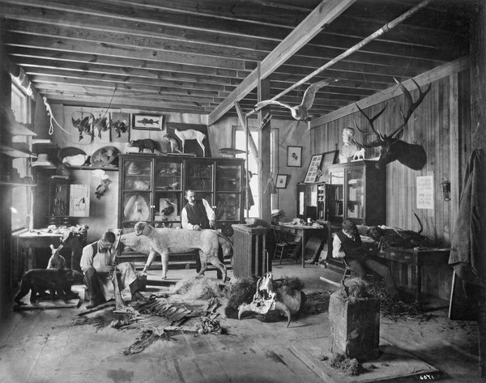
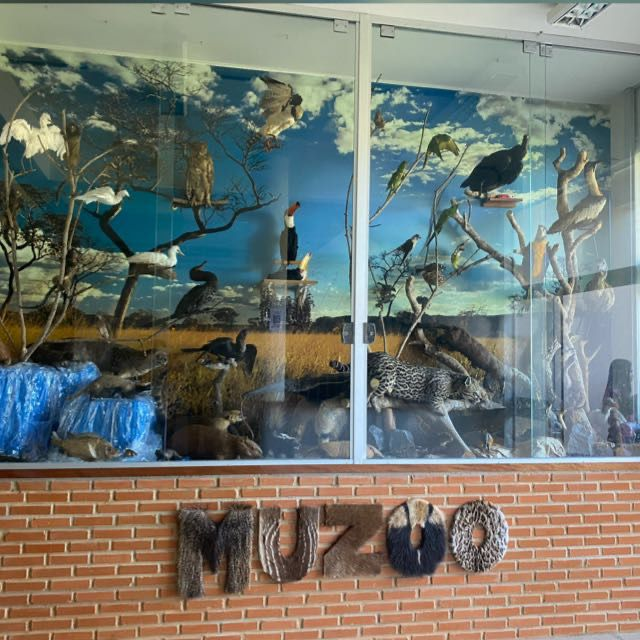
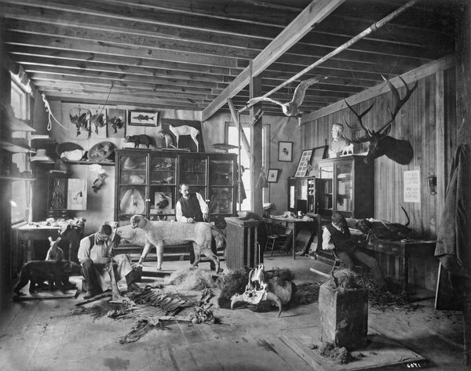
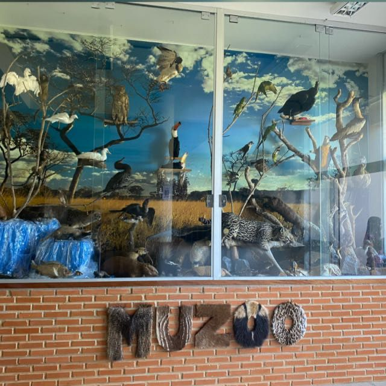

O que é Taxidermia?
A taxidermia é a técnica de preservar animais mortos de forma a manter suas características naturais para fins científicos, educacionais ou decorativos. Esse processo envolve a remoção dos órgãos internos do animal, a limpeza da pele e a modelagem do corpo com materiais que proporcionem a preservação a longo prazo.
Diferença entre Taxidermia e Empalhamento
Embora os termos "taxidermia" e "empalhamento" sejam frequentemente usados de forma intercambiável, eles referem-se a processos distintos. A taxidermia é uma técnica de preservação de animais mortos que visa manter suas características naturais, como pele e estrutura corporal, para fins educacionais, científicos ou decorativos. Durante o processo de taxidermia, os órgãos internos são removidos, a pele é tratada e modelada sobre um molde adequado, garantindo que o animal preservado mantenha uma aparência natural e realista.
Por outro lado, o empalhamento é um processo que envolve a inserção de material como palha ou serragem no corpo do animal, para preenchê-lo e dar-lhe uma forma rígida. Essa técnica é menos refinada que a taxidermia e não visa preservar as características naturais do animal de forma detalhada, mas sim apenas manter sua forma externa. O empalhamento pode resultar em uma figura mais rígida e menos realista em comparação com a taxidermia, que proporciona uma aparência mais próxima da vida.
Em resumo, enquanto a taxidermia se preocupa com a preservação detalhada e natural do animal, o empalhamento é um processo mais rudimentar, com foco apenas em manter a forma do corpo. A taxidermia, portanto, é mais comum em museus e exposições, onde a precisão e a estética são essenciais.
Taxidermia
História da Taxidermia
A prática de taxidermia tem suas raízes em antigas civilizações, como os egípcios, que preservavam animais para fins religiosos. No entanto, a forma moderna de taxidermia surgiu no século XVIII, quando cientistas começaram a estudar a anatomia dos animais por meio da preservação de espécimes. O uso de taxidermia no campo científico ajudou a expandir o conhecimento sobre espécies e suas características, sendo uma ferramenta essencial para a zoologia.
Taxidermia
Processo de Taxidermia
O processo de taxidermia envolve várias etapas detalhadas e delicadas. Após a captura ou coleta de um animal, o taxidermista inicia a limpeza do corpo, removendo órgãos internos e preparando a pele. O corpo é modelado com um tipo de enchimento, e a pele é esticada e costurada para manter a forma natural do animal. O taxidermista então coloca a pele sobre a estrutura e a modela de acordo com a posição desejada. Após a secagem, o animal é tratado com produtos para evitar o apodrecimento.
Taxidermia no Museu
Museus de história natural e zoológicos utilizam a taxidermia para exibir animais de diversas espécies, permitindo ao público estudar suas formas e características de perto. A taxidermia também desempenha um papel importante na preservação de animais ameaçados, contribuindo para o estudo e conservação dessas espécies.
Considerações Éticas
A taxidermia levanta questões éticas, especialmente quando se trata de animais que foram caçados ou mortos em condições não naturais. Em muitos países, a prática é regulamentada para garantir que os animais usados para taxidermia sejam adquiridos de forma legal e ética. A taxidermia moderna foca na educação e no respeito à vida animal, promovendo a conscientização sobre a conservação.
Taxidermia